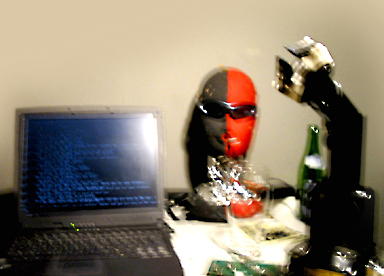

|  |
.......................... ALICE T. ELECTRIX
ALICE T. ELECTRIX ist eine sprechende Bardame, entwickelt von Aaron Kaplan. Alice
versucht neue Impulse im Bereich der Barkonversation zu setzen, beruhend auf dem berühmten TURING-TEST. Der weibliche Roboter-Kopf versucht auf charmante Art Besucher in eine längere Konversation zu verwickeln. Dabei entstehen interessante Gespräche, belebt durch Situationskomik.
|